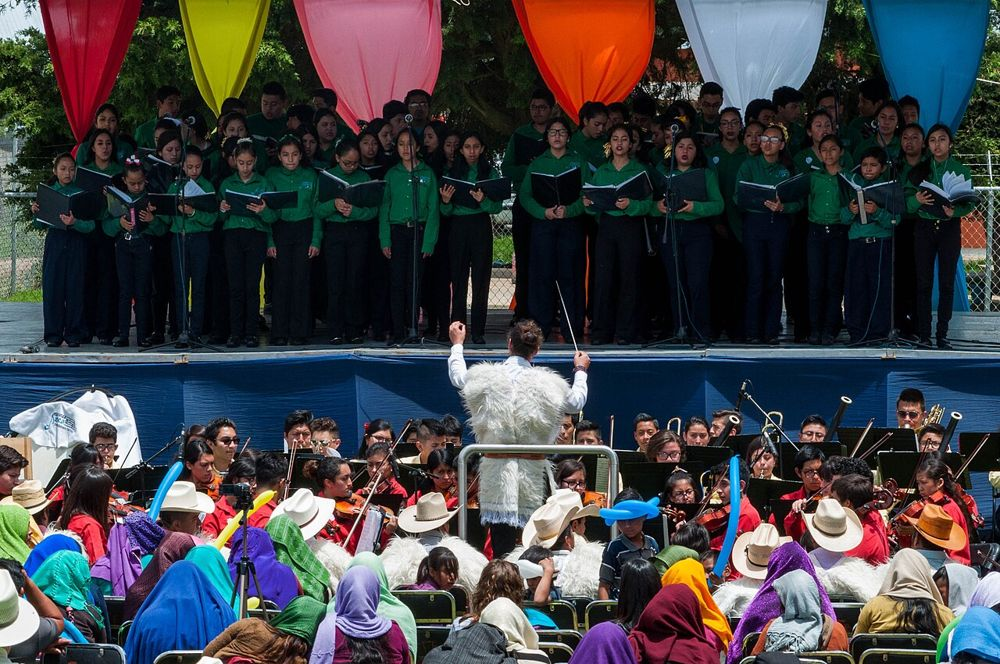

🎵 בוקר טוב מוסיקה
תזמורת אמריקאית פתחה אתר משחקים מוזיקלי לילדים וילדות
6 באוקטובר 2026 ממהדורה 1 · 8 באוקטובר 2026
התזמורת הסימפונית של העיר קולומבוס שבארצות הברית השיקה ב־6 באוקטובר 2026 אתר חדש לילדים וילדות מגן חובה ועד כיתה ו׳, בשם CSOkids.
באתר אפשר להכיר כלי נגינה ולשמוע איך הם נשמעים, לפגוש מלחינים, לשחק במשחקים מוזיקליים ואפילו לשלוח ציורים. את הפעילויות כתבו מורים ומורות ממדינת אוהיו, והן מתאימות לתוכנית הלימודים שם.
המטרה היא לחבר בין מה שלומדים בבית או בכיתה לבין החוויה של קונצרט אמיתי באולם, עם הנגנים והנגניות של התזמורת. אחד המעצבים של האתר אמר שהרעיון היה שלמידת מוזיקה תרגיש ״כמו הפסקה, לא כמו שיעורי בית״. האתר באנגלית, ואפשר לגלוש בו יחד עם מבוגר או מבוגרת.
💬 לחשוב ולשוחח: איזה כלי נגינה הייתם רוצים ורוצות לנסות? איך לדעתכם הוא נשמע?
מקורות וקרדיטים
📰 מקורות המידע
- Columbus Symphony Launches Digital Platform for Young Learners · BroadwayWorld (6 באוקטובר 2026)
📖 להעמיק ולקרוא עוד
- האתר CSOkids (אנגלית) · CSOkids
- תזמורת · ויקיפדיה
תמונה: Fotografiamerlin · רישיון: CC BY-SA 4.0 · מקור התמונה
הידיעה נכתבה במילים שלנו על סמך המקורות.